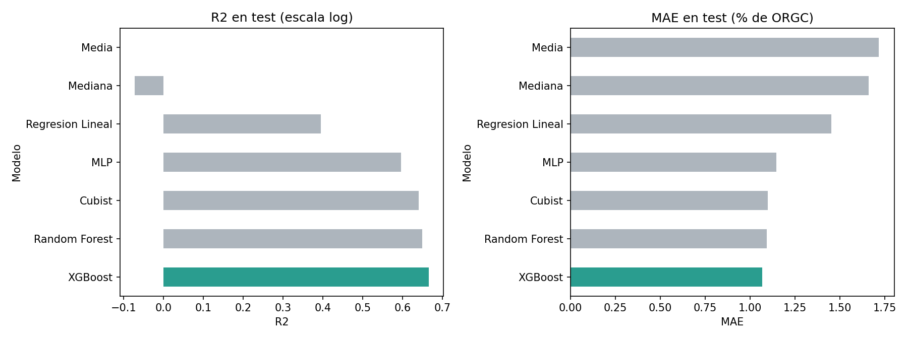
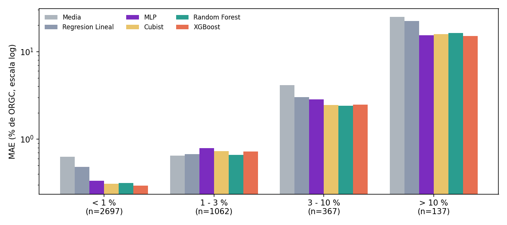
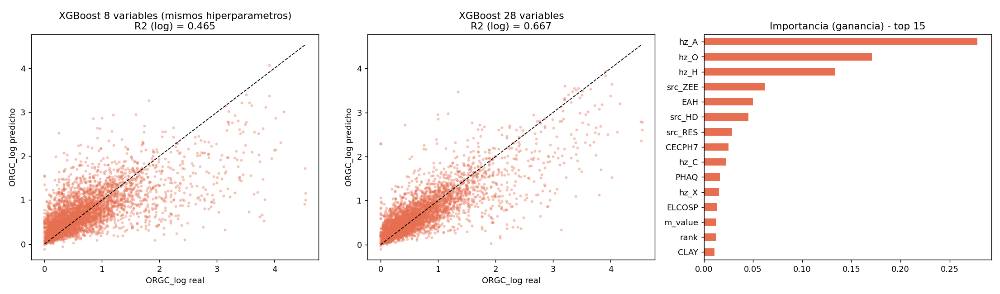

El carbono orgánico del suelo (SOC) influye en la fertilidad, en la retención de agua y en la estructura del suelo. Además, el suelo guarda más carbono que la vegetación, así que saber cuánto carbono tiene y dónde está sirve tanto para la agricultura como para las políticas frente al cambio climático. En el Perú hay suelos muy distintos en la costa, los Andes y la Amazonía, pero la información disponible es poca para un territorio tan grande. El análisis en laboratorio, normalmente por oxidación húmeda de Walkley-Black, necesita muestreo en campo, tiempo y presupuesto. Con la publicación de AllpaDB [1], que reúne y armoniza estudios de suelos hechos en el país desde 1962, ahora se cuenta con miles de capas de suelo con propiedades de laboratorio que se pueden comparar entre sí.
Varios trabajos recientes en el Perú ya predicen el SOC con aprendizaje automático [2]–[4]. Sin embargo, trabajan con unos cientos de muestras de una o dos cuencas y se apoyan sobre todo en imágenes satelitales, clima y relieve. Por otro lado, las funciones de pedotransferencia buscan estimar propiedades difíciles de medir a partir de otras más comunes, usando bases de datos históricas [5]. Lo que no encontramos es una evaluación a escala nacional de cuánto se puede predecir el carbono orgánico solo con las propiedades que los laboratorios y los levantamientos de campo registran normalmente.
Por eso, nuestro objetivo es desarrollar y comparar modelos de aprendizaje automático que predigan el contenido de carbono orgánico (ORGC, %) a partir de propiedades edáficas de AllpaDB. Comparamos seis modelos con la misma partición por perfil y las mismas métricas, primero con 8 variables y después con 28, y revisamos en qué rangos de carbono se equivoca cada uno. En la Sección II resumimos los trabajos relacionados, en la III describimos el dataset, en la IV la metodología, en la V mostramos los resultados, en la VI los discutimos y en la VII presentamos las conclusiones.
Salazar-Coronel et al. [2] mapearon el SOC (%) de la cuenca del río Motupe, en la costa norte, con 109 muestras compuestas. Usaron relieve, clima, índices de vegetación y propiedades del suelo interpoladas, y compararon SVR, Random Forest (RF), una red neuronal y XGBoost, además de dos ensambles, con validación espacial en bloques. XGBoost tuvo el mejor R² (0.83). De este trabajo tomamos RF y XGBoost con búsqueda en malla.
Carbajal et al. [3] predijeron el SOC con 198 muestras de los Andes de Junín, usando RF, una red neuronal artificial (ANN), SVM y XGBoost con variables de uso del suelo, índices espectrales, clima y topografía. En prueba el mejor fue RF (R² = 0.49) y luego la ANN (0.43); entre algoritmos había poca diferencia, y los autores concluyen que el tamaño de la muestra importa más que el algoritmo. De aquí tomamos la red neuronal, que implementamos como MLP, y la idea de reportar métricas de entrenamiento y de prueba.
Carbajal et al. [4] estimaron el stock de SOC en las cuencas altoandinas de Torobamba y Coata (196 sitios) con regresión geográficamente ponderada (GWR), sus variantes con kriging de residuos, RF y Gradient Boosting. La mejor variante fue GWRCK, mientras que RF y Gradient Boosting no pasaron de R² = 0.11, según los autores por la muestra pequeña y la falta de variables espaciales. De este trabajo tomamos el modelo de boosting con búsqueda en malla.
Benke et al. [5] desarrollaron funciones de pedotransferencia para predecir el carbono orgánico con datos históricos de suelos de Victoria, Australia (1 954 muestras); la profundidad, el pH y la granulometría fueron las variables más repetidas. Es el trabajo más parecido a nuestro enfoque, y de aquí tomamos la idea de plantear el problema como una función de pedotransferencia.
Ou et al. [6] mapearon el SOC con 12 041 muestras de suelos agrícolas de la llanura de Jianghan, China, con 17 variables. Cubist, que combina reglas con regresiones lineales locales, superó a RF, kriging y regresión lineal (R² de 0.29 frente a 0.26, 0.21 y 0.21). De aquí tomamos Cubist, ajustando sus comités y vecinos.
Usamos AllpaDB [1], publicada en Zenodo en mayo de 2026 por la Universidad Nacional Agraria La Molina, la Universidade Federal de Santa Catarina y la PUCP, con licencia abierta CC BY 4.0. Trabajamos con el archivo allpaDB_layer_HARMONIZED_v1.csv, que tiene 24 341 capas (horizontes) y 45 columnas, de 8 793 perfiles y 224 documentos. La variable objetivo es ORGC, el carbono orgánico total medido por Walkley-Black (%). El conjunto base de predictores fue: profundidad superior e inferior, pH en agua (PHAQ), arena, limo y arcilla, carbonato de calcio equivalente (TCEQ), conductividad eléctrica (ELCOSP) y capacidad de intercambio catiónico efectiva (ECEC).
ORGC tiene 11.2 % de valores faltantes y 8 valores mayores a 100 %, que no son posibles. Su distribución es muy asimétrica (asimetría de 7.3, mediana de 0.69 % y media de 2.0 %): en el conjunto de prueba, el 63 % de las capas tiene menos de 1 % de carbono y solo el 3.2 % pasa de 10 %, que corresponde a suelos orgánicos. En los predictores, los faltantes van desde 4 % en las profundidades hasta 38 % en ELCOSP. Encontramos texturas que no suman 100 ± 5 (134 capas), 32 valores de pH menores a 2 y muchos atípicos en TCEQ y ELCOSP. Las correlaciones lineales con ORGC son bajas (la más alta, pH: −0.20), lo que anticipaba un mal resultado de los modelos lineales. Las profundidades superior e inferior están muy relacionadas (r = 0.81) y la arena se deduce del limo y la arcilla.
Eliminamos las filas sin ORGC (2 732) y con ORGC mayor a 100 % (8), y quedaron 21 601 capas. Las texturas que no suman 100 ± 5 y los pH menores a 2 se convirtieron en faltantes. En vez de las dos profundidades usamos la profundidad media (depth_mid) y el espesor (thickness), y quitamos la arena, con lo que quedaron 8 predictores. La partición se hizo por perfil, para que las capas de un mismo perfil no estén a la vez en entrenamiento y prueba: 80 % de los perfiles para entrenamiento (17 338 capas, 6 564 perfiles) y 20 % para prueba (4 263 capas, 1 642 perfiles), con semilla 42. Todo lo siguiente se ajustó solo con el entrenamiento: log(1 + x) a TCEQ, ELCOSP, ECEC y espesor; recorte de atípicos con IQR; imputación con media o mediana según la asimetría, y estandarización z-score para la regresión lineal y la MLP. No usamos aumento de datos.
Variables adicionales (28 predictores). Con 8 variables, ajustar los hiperparámetros de RF casi no cambiaba el resultado (R² de validación 0.477 → 0.484), así que agregamos 20 variables de AllpaDB que describen el suelo pero no miden el carbono: cationes intercambiables (Ca, Mg, K, Na), acidez intercambiable (EAH), CIC a pH 7, valor y croma del color Munsell húmedo, posición de la capa en el perfil, horizonte (A, B, C, O, H, E, R u otro) y fuente de los datos. Las dos últimas son categóricas y se codificaron con one-hot; las numéricas se imputaron con la mediana del entrenamiento. No incluimos la densidad aparente (BD2), que se explica con R² = 0.90 a partir de textura y ORGC porque fue estimada con el propio carbono, ni el nitrógeno total, que se mide en el mismo análisis. En este segundo experimento todos los modelos usan los 28 predictores y se entrenan sobre log(1 + ORGC); las predicciones se devuelven a % antes de calcular las métricas.
Como líneas base usamos la media del entrenamiento y una regresión lineal múltiple con las variables estandarizadas. Random Forest [2] es un conjunto de árboles de decisión; sus hiperparámetros se eligieron separando el 20 % de los perfiles de entrenamiento como validación, y el modelo final tiene 500 árboles. XGBoost [2], [4] es un modelo de boosting de árboles [7]; con 28 variables lo ajustamos con una malla de 32 combinaciones en la misma validación y fijamos el número de árboles con parada temprana. Cubist [6] genera reglas, ajusta una regresión lineal dentro de cada una, las combina en comités y corrige la predicción con los vecinos más cercanos. La MLP [3] es una red de capas totalmente conectadas, con ReLU, Adam y parada temprana. Cubist y la MLP se volvieron a ajustar con 28 variables en la misma validación (Tabla II). Además, para comprobar que el orden de los modelos no depende de una sola partición, evaluamos todos con validación cruzada agrupada por perfil (GroupKFold, 5 particiones) sobre el entrenamiento. Todos los modelos, salvo XGBoost y Cubist, se implementaron con scikit-learn [8].
Usamos R², RMSE, MAE y el error absoluto mediano (MedAE), en % de ORGC y sobre el conjunto de prueba. Como ORGC es muy asimétrica, el R² y el RMSE dependen sobre todo de las pocas capas con mucho carbono, mientras que el MAE y el MedAE reflejan el error en la mayoría de capas. Por eso reportamos ambos tipos de métricas, el MAE por rangos de ORGC, el R² en escala logarítmica (la que optimizan los modelos) y el porcentaje de capas con error ≤ 1 %.
La Tabla I y la Fig. 1 comparan todos los modelos sobre las mismas 4 263 capas de prueba. Con 8 predictores (resultados de cada integrante), XGBoost obtiene el mayor R² (0.26) y la MLP y RF el menor MAE (1.38 %). Con 28 predictores todos los modelos mejoran. XGBoost es el mejor en R² (0.45), RMSE (4.06 %), MAE (1.07 %) y MedAE (0.26 %); RF queda muy cerca (R² = 0.42; MAE = 1.09 %), seguido de Cubist (R² = 0.40; MAE = 1.10 %) y la MLP (R² = 0.44; MAE = 1.14 %), que tiene buen R² en % pero el menor R² en escala log de los modelos no lineales. Incluso la regresión lineal sube de R² = 0.09 a 0.12 y su MAE baja de 2.17 a 1.45 %.
| Modelo | R² | RMSE (%) | MAE (%) | MedAE (%) | R² log |
|---|---|---|---|---|---|
| 8 predictores | |||||
| Media | 0.00 | 5.49 | 2.18 | 1.52 | — |
| Regresión lineal | 0.09 | 5.23 | 2.17 | 1.35 | — |
| Random Forest [2] | 0.21 | 4.87 | 1.38 | — | 0.45 |
| XGBoost [2], [4] | 0.26 | 4.72 | 1.64 | 0.51 | — |
| Cubist [6] | 0.22 | 4.85 | 1.66 | 0.43 | — |
| MLP [3] | 0.19 | 4.95 | 1.38 | 0.34 | — |
| 28 predictores (todos sobre log(1 + ORGC)) | |||||
| Media | −0.03 | 5.57 | 1.72 | 0.71 | 0.00 |
| Regresión lineal | 0.12 | 5.15 | 1.45 | 0.45 | 0.39 |
| Random Forest [2] | 0.42 | 4.18 | 1.09 | 0.29 | 0.65 |
| XGBoost [2], [4] | 0.45 | 4.06 | 1.07 | 0.26 | 0.67 |
| Cubist [6] | 0.40 | 4.25 | 1.10 | 0.28 | 0.64 |
| MLP [3] | 0.44 | 4.13 | 1.14 | 0.29 | 0.60 |

La Tabla II resume la búsqueda de hiperparámetros con 28 variables. En todos los modelos se usó búsqueda en malla (grid search) sobre la misma validación separada (20 % de los perfiles de entrenamiento), eligiendo la configuración con menor RMSE en escala log; en XGBoost el número de árboles se fijó con parada temprana. La Tabla III muestra la validación cruzada agrupada: XGBoost es el mejor en las tres métricas y su ventaja en R² log (0.68 frente a 0.64–0.65) es mayor que la desviación entre particiones (≈ 0.02), mientras que RF y Cubist quedan empatados.
| Modelo | Hiperparámetro | Valores probados | Mejor |
|---|---|---|---|
| RF | max_features | 0.33, 0.5, 0.7, 1.0 | 0.5 |
| RF | max_depth / min_samples_leaf | 15, 25 / 1, 3 | 25 / 1 |
| XGBoost | max_depth | 4, 6, 8, 10 | 10 |
| XGBoost | min_child_weight | 1, 5 | 1 |
| XGBoost | colsample_bytree / reg_lambda | 0.5, 0.8 / 1, 10 | 0.8 / 10 |
| XGBoost | n.º de árboles (lr = 0.03) | parada temprana | 1 009 |
| Cubist | n_committees / neighbors | 10, 20 / ninguno, 5, 9 | 20 / 9 |
| MLP | capas ocultas | (128, 64, 32), (256, 128, 64) | (256, 128, 64) |
| MLP | alpha (L2) | 0.01, 0.1, 1 | 0.1 |
| Modelo | R² log | R² (%) | MAE (%) |
|---|---|---|---|
| Regresión lineal | 0.39 ± 0.02 | 0.12 ± 0.03 | 1.49 ± 0.07 |
| MLP | 0.58 ± 0.03 | 0.39 ± 0.02 | 1.23 ± 0.03 |
| Cubist | 0.64 ± 0.02 | 0.44 ± 0.07 | 1.13 ± 0.06 |
| Random Forest | 0.65 ± 0.02 | 0.42 ± 0.07 | 1.13 ± 0.07 |
| XGBoost | 0.68 ± 0.02 | 0.48 ± 0.06 | 1.08 ± 0.05 |
En la Fig. 2 se ve el MAE por rango de ORGC con 28 predictores. Debajo de 1 % de carbono XGBoost, Cubist y RF tienen errores de solo 0.29 a 0.31 % (MLP: 0.33 %), contra 0.48 % de la regresión lineal y 0.63 % de la media. En las capas con más de 10 %, XGBoost tiene el menor error (15.1 %), seguido de la MLP (15.3 %), Cubist (15.9 %) y RF (16.2 %). Sobre el sobreajuste, XGBoost pasa de R² log = 0.98 en entrenamiento a 0.67 en prueba RF de 0.95 a 0.65 y Cubist de 0.85 a 0.64, mientras que la MLP (0.77 y 0.60) y la regresión lineal (0.40 y 0.39) casi no cambian.


Agregar información ayudó mucho más que cambiar de algoritmo. Con los mismos hiperparámetros, XGBoost pasó de R² log = 0.47 con 8 variables a 0.67 con 28 (Fig. 3), y su MAE bajó de 1.34 a 1.07 %; RF pasó de R² = 0.21 a 0.42. Todos los modelos mejoraron en todos los rangos de carbono, mientras que ajustar los hiperparámetros con 8 variables casi no cambiaba nada. Es la misma conclusión de [3] y [5]: la mejora depende sobre todo de tener más y mejores variables.
Con más información sí aparecen diferencias entre algoritmos. Con 8 variables los modelos no lineales quedaban entre R² = 0.19 y 0.26. Con 28, los modelos basados en árboles (XGBoost, RF y Cubist, R² log de 0.64 a 0.67) se separan de la MLP (0.60) y sobre todo de la regresión lineal (0.39). Las nuevas variables actúan por interacciones y umbrales: el efecto del pH o de la CIC cambia según el horizonte y la región, y los árboles capturan eso sin especificarlo. En datos tabulares de este tamaño, con muchas variables binarias, la MLP aprende esas interacciones con menos eficiencia.
Desaparece el conflicto entre R² y MAE. Con 8 variables, XGBoost y Cubist (entrenados en %) ganaban en R² y RF y la MLP (entrenados en log) en MAE. Al entrenar todos en escala logarítmica la comparación es justa, y XGBoost gana en ambas métricas: el boosting corrige secuencialmente los residuos grandes y por eso pierde menos precisión en los suelos orgánicos. La diferencia con RF es pequeña en la prueba (0.03 de R²), pero la validación cruzada confirma que XGBoost es mejor en todas las particiones.
Las variables más importantes en XGBoost (Fig. 3, derecha) son el horizonte (A, O y H), la fuente de los datos y la acidez intercambiable. Es coherente con la edafología: la materia orgánica se acumula en los horizontes superficiales (A) y orgánicos (O, H), y los suelos ácidos de altura la descomponen más lento. El horizonte y el color se registran en campo sin laboratorio, lo que hace más útil el modelo como función de pedotransferencia.
La mayor parte del error sigue en los suelos orgánicos. Las 137 capas con más de 10 % de ORGC (3.2 % de la prueba) tienen un MAE de 15 a 16 % incluso en los mejores modelos. Creemos que estos suelos, como los bofedales andinos, dependen más del uso del suelo y del ambiente que de las propiedades usadas; en [3] el uso del suelo fue la variable más importante.
Limitaciones. AllpaDB junta datos de distintos laboratorios y épocas, y el archivo de capas no trae coordenadas, por lo que no usamos variables ambientales ni validación espacial; el modelo podría rendir peor en regiones o levantamientos poco representados. La fuente de los datos aparece entre las variables importantes, lo que sugiere diferencias de método entre levantamientos y que el modelo podría no generalizar a fuentes nuevas. El color Munsell y la CIC a pH 7 se imputaron con la mediana en el 52 % y el 48 % del entrenamiento, lo que reduce su información. XGBoost y RF sobreajustan (R² log de entrenamiento de 0.95 a 0.98), aunque eso no empeora su desempeño en prueba ni en validación cruzada. Los suelos orgánicos están poco representados (3 % de las capas) y concentran la mayor parte del error. Por último, el preprocesamiento de las 8 variables base se ajustó con todo el entrenamiento antes de la validación cruzada, lo que puede hacer algo optimistas sus métricas. El costo computacional fue bajo: cada búsqueda tomó pocos minutos en CPU.
Usamos Claude (Anthropic, modelos Claude Opus 5.5 y Claude Sonnet 5.5) y ChatGPT (OpenAI, modelo GPT-5) como apoyo para implementar y depurar el código de los modelos, revisar el código del repositorio, volver a calcular las métricas comparativas, generar las figuras y redactar un primer borrador de este reporte. Revisamos, verificamos y editamos todo el contenido, y asumimos la responsabilidad total del trabajo.
Repositorio: https://github.com/israel-cc/IA-_Predicci-n-de-Carbono-Org-nico-en-Suelo-SOC-
[1] C. Mestanza et al., “AllpaDB: A compiled repository of harmonized soil legacy data and research data from Peru,” Sci. Data, 2026, doi: 10.1038/s41597-026-07558-9.
[2] W. Salazar-Coronel, C. Carbajal-Llosa, and R. Chuchon-Remon, “Soil organic carbon content mapping along the coast of northern Peru: An ensemble machine learning approach,” Front. Soil Sci., vol. 6, Art. no. 1745154, 2026, doi: 10.3389/fsoil.2026.1745154.
[3] M. Carbajal et al., “From rangelands to cropland, land-use change and its impact on soil organic carbon variables in a Peruvian Andean highlands: A machine learning modeling approach,” Ecosystems, vol. 27, pp. 899–917, 2024, doi: 10.1007/s10021-024-00928-7.
[4] C. Carbajal, M. Tumbalobos-Dextre, T. Condori-Ataupillco, N. Cuellar-Condori, and C. Gavilan, “Spatial prediction of soil organic carbon stocks across contrasting Andean basins, Peru,” Geoderma Reg., vol. 43, Art. no. e01026, 2025, doi: 10.1016/j.geodrs.2025.e01026.
[5] K. K. Benke, S. Norng, N. J. Robinson, K. Chia, D. B. Rees, and J. Hopley, “Development of pedotransfer functions by machine learning for prediction of soil electrical conductivity and organic carbon content,” Geoderma, vol. 366, Art. no. 114210, 2020, doi: 10.1016/j.geoderma.2020.114210.
[6] J. Ou, Z. Wu, Q. Yan, X. Feng, and Z. Zhao, “Improving soil organic carbon mapping in farmlands using machine learning models and complex cropping system information,” Environ. Sci. Eur., vol. 36, Art. no. 80, 2024, doi: 10.1186/s12302-024-00912-x.
[7] T. Chen and C. Guestrin, “XGBoost: A scalable tree boosting system,” in Proc. 22nd ACM SIGKDD Int. Conf. Knowl. Discov. Data Min., 2016, pp. 785–794.
[8] F. Pedregosa et al., “Scikit-learn: Machine learning in Python,” J. Mach. Learn. Res., vol. 12, pp. 2825–2830, 2011.